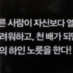

HOT오늘도 글12일 연속
직장인 투자자 타키온으로 소개된 필명입니다. 법적 실명은 미확인입니다.
자산배분·시황을 자주 적어, 인기 있는 개인 투자 기록을 고를 때 쓴다.
국내외 기업과 업종을 해설하는 글
오늘 읽을 글: 주식 블로그, 시황과 가치평가를 나눠 읽는 법
HOT오늘도 글12일 연속
직장인 투자자 타키온으로 소개된 필명입니다. 법적 실명은 미확인입니다.
자산배분·시황을 자주 적어, 인기 있는 개인 투자 기록을 고를 때 쓴다.
HOT오늘도 글10일 연속
주식·채권 등을 다루는 경제 블로거로, 네이버 인플루언서 페이지에 소개되어 있습니다.
거의 매일 시황·종목 해설을 올리는 인기 블로그라, 당일 국내 흐름을 촘촘히 볼 때 쓴다.
HOT오늘도 글16일 연속
국내 증시와 산업을 글로 해설하는 필명입니다. 법적 실명은 미확인입니다.
경제 이슈를 쉬운 말로 빨리 전하는 네임드 블로그. 깊이는 시황 해설보다 얕을 수 있어 입문용으로 둔다.
HOT오늘도 글13일 연속
은퇴·연금 주제를 다루는 블로그입니다. 작성자 실명은 미확인입니다.
연금·실업급여처럼 제도 숫자를 풀어 쓰는 은퇴·현금흐름 관점이 시황 글과 보완된다.
HOT오늘도 글
작성자 실명과 약력은 미확인입니다. 공개 피드와 선정 이유로만 소개합니다.
IPO·딜 소식을 매체 형식으로 전한다. 개인 투자 일기와 역할이 달라 섞어 둔다.
HOT오늘도 글3일 연속
콤디티라는 필명으로 투자 글을 씁니다. 법적 실명은 미확인입니다.
글 빈도가 높아 당일 개인 투자 기록을 고를 때 보탠다. 네임드 규모는 시황 대표 블로그보다 작다.
HOT오늘도 글9일 연속
작성자 실명과 약력은 미확인입니다. 공개 피드와 선정 이유로만 소개합니다.
개인 투자 기록이 꾸준하다. 유명 시황 채널만 모으면 빠지는 일상의 매매 관점을 보충한다.
HOT오늘도 글
작성자 실명과 약력은 미확인입니다. 공개 피드와 선정 이유로만 소개합니다.
AI 인프라·반도체 관련 기업을 공개자료 기준으로 정리해, 테마 제목만 있는 글과 구분된다.
HOT오늘도 글3일 연속
작성자 실명과 약력은 미확인입니다. 공개 피드와 선정 이유로만 소개합니다.
덜 알려진 편에 속하는 분석 블로그를 유명 채널과 섞기 위해 넣었다.
HOT오늘도 글
작성자 실명과 약력은 미확인입니다. 공개 피드와 선정 이유로만 소개합니다.
더따리에서도 추천된 투자 블로그. 매일 글이 확인되어 시황 보조로 넣었다.
HOT
작성자 실명과 약력은 미확인입니다. 공개 피드와 선정 이유로만 소개합니다.
기업분석 전문 블로그로, 유명한 시황 계정과 겹치지 않는 종목 글을 고르기 위해 넣었다.
HOT오늘도 글11일 연속
국내 주식 실전투자 해설로 오래 알려진 필명입니다.
거의 매일 장문 시황을 올리는 대표 블로그라, 메르·염블리와 다른 각도의 당일 해석을 볼 때 쓴다.
HOT오늘도 글12일 연속
재테크·투자 글을 쓰는 필명으로, 공개 블로그와 소개 문서에서 확인됩니다.
글 빈도가 매우 높아, 국내 재테크 시각의 당일 논점을 모을 때 쓴다.
HOT오늘도 글3일 연속
썬플라라는 필명으로 경제·재테크 글을 자주 씁니다. 법적 실명은 미확인입니다.
글 빈도가 매우 높아, 정책·상품·시황을 빠르게 훑을 때 쓴다.
HOT오늘도 글14일 연속
아이언이라는 필명으로 IPO·공모 일정을 자주 정리합니다. 법적 실명은 미확인입니다.
상장·수요예측처럼 일정형 정보를 거의 매일 모아, 기업분석 블로그와 역할을 나눈다.
HOT오늘도 글
증권가 시황 해설로 널리 알려진 인물입니다.
증권가 시황을 매일 풀어 주는 대표적인 해설이라, 오늘의 업종 흐름을 먼저 볼 때 쓴다.

인문학자의 화식열전HOT오늘도 글
작성자 실명과 약력은 미확인입니다. 공개 피드와 선정 이유로만 소개합니다.
인문·역사 결의 투자 칼럼이 있어, 리포트 요약형과 결이 다르다.
HOT
작성자 실명과 약력은 미확인입니다. 공개 피드와 선정 이유로만 소개합니다.
개별 기업 분석이 주라, 시황 채널만 볼 때 빠지는 종목 단위 설명을 보완한다.
HOT
작성자 실명과 약력은 미확인입니다. 공개 피드와 선정 이유로만 소개합니다.
오래 쌓인 개인 블로그로 이웃 규모는 크지만, 유명 애널리스트 채널과는 다른 독자 글이다.
작성자 실명과 약력은 미확인입니다. 공개 피드와 선정 이유로만 소개합니다.
투자와 삶의 태도를 같이 적는 에세이형이라, 숫자 나열 글 사이에서 맥락을 고를 때 쓴다.
작성자 실명과 약력은 미확인입니다. 공개 피드와 선정 이유로만 소개합니다.
꾸준한 개인 기록이 확인되어, 입소문만 큰 채널에 기대지 않기 위해 선정했다.
오늘도 글8일 연속
Abnormal Returns 블로그의 저자로 알려져 있습니다.
좋은 투자 글을 가리키는 큐레이션. 본편 해설이 아니라 찾아가기용이다.
오늘도 글
포세이돈이라는 필명으로 시장 전망 글을 씁니다. 법적 실명은 미확인입니다.
당일·주간 시장 대응 글이 자주 나와, 시황 창구를 보탠다.
HOT
투자 기록을 쓰는 블로그입니다. 작성자 실명은 미확인입니다.
최근에도 글이 확인된 개인 투자기록이라, 유명 시황 채널만 볼 때 빠지는 기록을 보충한다.
오늘도 글
회색인간이라는 필명으로 투자 글을 씁니다. 법적 실명은 미확인입니다.
레버리지·수급 논점을 자주 적어, 시황 글과 다른 각도를 보탠다. 제목 톤은 강해 선별해 읽는다.
작성자 실명과 약력은 미확인입니다. 공개 피드와 선정 이유로만 소개합니다.
파생·전업의 무게를 회고체로 적어, 급등 뉴스와 거리를 두고 읽기 좋다.
작은투자자라는 필명으로 기업분석 글을 씁니다. 법적 실명은 미확인입니다.
종목 단위 분석이 있어, 시황형 고빈도 블로그와 역할을 나눈다.
오늘도 글
자산배분·시장 해설 블로그 A Wealth of Common Sense의 저자로 알려져 있습니다.
자산배분과 투자 태도를 쉽게 쓰는 글이라, 국내 일일 시황과 호흡을 나눈다.
제라드라는 필명으로 투자 노트를 씁니다. 법적 실명은 미확인입니다.
증권사 자료 요약형 노트가 있어, 시황 글과 나눠 읽는다.
뉴욕대(NYU) 스턴 경영대학원의 가치평가 교수로 널리 알려져 있습니다.
가치평가 가정을 공개해 쓰는 대표 블로그. 시황 글과 질문을 달리 하려고 넣었다.
Of Dollars And Data 블로그의 저자로 알려져 있습니다.
데이터로 개인 투자 습관을 풀어, 종목 해설 블로그와 보완된다.
공모주식 3분의 1이 구주매출…후순위로 밀린 성장재원 확보 코스닥 상장을 추진하는 아이웨어 브랜드 기업 태석광학이 공모 물량의 3분의 1을 구주매출로 채웠습니다. 전량 권명석 대표의 보유 지분으로 이는 회사가 시설투자와 브랜드 인수 등에 배정한 금액을 웃도는 규모입니…
당초 기획한 2000억서 1.5배 증액…해외 모집엔 기존 출자자 네트워크에 더해 북미 투자가 접촉 예상 사모펀드 운용사 아크앤파트너스가 2호 블라인드펀드의 국내 자금 모집을 3000억원 수준에서 사실상 마무리했습니다. 국내 펀딩을 마무리한 아크는 새해에는 해외에서 위…
12월 16일까지 노바스 전역 대규모 보스 출현…전설 등급 무기 형상 케이스 등 풍성한 보상 제공 '광산 전쟁' 2차 리뉴얼·신규 경쟁 체계 '서브 리그' 도입 및 전용 채굴장 대여 시스템 추가 넷마블이 PC·모바일 다중접속역할수행게임(MMORPG) 'RF 온라인 넥…
가족이나 다름없었던 장인과 사위가 이혼 직후 법정에서 진흙탕 싸움을 시작했습니다. (실제 사건임) 장인의 소개로 결혼에 골인 (응???) 좀 특이한 케이스죠? 어떤 노신사가 잃어버린 지갑의 주인을 찾아줬는데, 그 지갑 주인이 젊은 남자였고, 노신사는 그 젊은 친구에게…
기술반환 2년 반 만에 'CU06' 2b상 IND 제출…가용 재원 200억 안팎·추가자금 조달 여부 촉각 큐라클이 기술반환 이후 2년 반 만에 경구용 안질환 신약 후보물질 ‘CU06(성분명 리바스테랏)’의 미국 내 후속 임상 진입을 시도합니다. 과거 유효성을 확보한…
특수관계인 포함 지분 28.99% 대상…DB손보·유진그룹 등 인수 후보 거론 이병철 다올금융그룹 회장이 다올투자증권 지분 매각에 나섰습니다. 잠재 인수 후보들과 접촉하며 원매자 물색을 시작한 가운데 금융업계의 인수 참여 여부에 관심이 쏠립니다. 24일 투자은행(IB)…
외부인사 서정호 대표 초고속 승진, 물류·생산 효율화 중책…푸드사업 혁신 위한 책임경영 인사도 롯데그룹이 외부 인사인 서정호 롯데웰푸드 대표를 입사 1년4개월 만에 부사장에서 사장으로 파격 승진시켰습니다. 동시에 롯데웰푸드 내 푸드사업부 대표이사 보직을 추가하며 그룹…
취임 첫해 임기 남은 CEO도 교체…인사 개입 논란·실적 양극화 속 선별적 교체 가능성 관측 구속 위기를 넘긴 강호동 농협중앙회장이 금융 계열사 연말 인사를 앞두고 '명분' 확보라는 과제를 안게 됐습니다. 2년 전에는 실적이 양호하고 임기가 남은 최고경영자(CEO)까…
전년 대비 참가사 49% 급증…'AGF 2026', 네이버웹툰·KADOKAWA·ANIPLEX 등 신규 라인업 확정 애니메이션 참가사 2배 증가·홀로라이브 신작 게임 합류…12월 4~6일 일산 킨텍스 개최 2018년 출범 이후 올해로 7회째를 맞은 국내 대표 서브컬처…
청년 감소분 절반이 제조업…숙박·음식점업에선 3만2000개 증가 올해 2분기 전체 임금근로 일자리가 1년 전보다 40만6000개 늘었습니다. 하지만 증가분의 68%가 60대 이상에 집중됐습니다. 반면 20대 이하 청년층 일자리는 오히려 5만6000개 줄었습니다. 특히…
박재한 SI 대표와 공동대표 체제 유지…이사회 의장 역할 넘어 사업 실행·성과 직접 책임 '아시아 비트코인 트레저리 주역' 제이슨 팡, 한국 시장 맞춤 디지털자산 전략 본격화 코스닥 상장사 비트플래닛이 25일 이사회를 열고 현 이사회 의장이자 글로벌 블록체인 전문 벤…
총 21만주, 17억 규모…“주주가치 제고 목적” 동화약품이 보유하고 있는 자기주식(자사주)을 전량 소각하며 주주가치 제고에 나섭니다. 동화약품은 24일 이사회를 열고 보통주 21만3540주를 소각하기로 결정했다고 공시했습니다. 이는 전체 발행주식의 약 0.76%에…
한림법학원·나무아카데미 등 수험·전문자격 시장 입지 탄탄…용인 등 500억 규모 부동산 활용도 매력 회생절차를 밟고 있는 윌비스가 새 주인 찾기에 나섰습니다. 성인 수험·전문자격 교육업체로 성장한 윌비스는 향후 섬유사업을 정리하고 한림법학원과 나무경영아카데미 등 기존…
경과조치 전 킥스비율 3개 분기 연속 180%대…가치배수 14.7배, '남는 계약' 선별 보험은 덜 팔았지만 미래 이익은 더 많이 확보했습니다. 한화손해보험이 외형 확대보다 수익성 높은 보험계약 확보에 집중하면서 자본건전성을 끌어올리고 있습니다. 보험 본업의 수익성을…
베트남 북부 타이응우옌성에 신규 법인 설립…"납기 단축 및 수주 경쟁력 강화 차원" 한솔그룹 계열 전기·전자부품 전문기업 한솔테크닉스가 충북 진천공장에서 생산해 온 스마트폰용 무선충전 수신모듈(RX)의 생산거점을 베트남으로 이전했습니다. 제조원가와 물류비를 절감하고…
전력·냉각·광통신 등 AI 데이터센터 핵심 인프라 기업 19곳 편입 한화자산운용이 인공지능(AI) 데이터센터 인프라 기업에 투자하는 상장지수펀드(ETF)를 선보였습니다. 버티브와 루멘텀, 블룸에너지 등 전력 공급과 냉각·열관리, 광통신 분야 기업을 담아 AI 산업 성…
수분양자 갈등 속 입주 앞두고 추가 사업비 조달 현대엔지니어링이 시공을 맡은 생활형숙박시설 ‘앙사나 레지던스 여의도 서울’의 추가 사업비 조달을 위해 후순위 프로젝트파이낸싱(PF) 대출에 연대보증을 제공했습니다. 입주를 앞두고 시행사인 마스턴투자운용이 후순위 자금을…
‘TPT’ 공식 출범 발표…안미정 회장 “좋은 조건 오면 매각 가능성도” 부광약품이 덴마크 신규 자회사 ‘쓰리포인트 테라퓨틱스(TPT)’를 앞세워 리보핵산(RNA) 신약 공동연구 확대에 나섭니다. TPT는 글로벌 제약사 룬드벡과 신경질환 치료제 연구 과제 2건을 진행…
15% 출자 한도 유지 땐 최소 4개 은행 뭉쳐야…파트너 선정·역할 분담 논의 속도 원화 스테이블코인 발행시장의 문이 은행권에 먼저 열리게 됐지만 사업 주도권을 둘러싼 셈법은 한층 복잡해졌습니다. 은행권이 합산 과반 지분을 확보해야 하는 가운데 현행 은행법상 15%…
방금 신영해피투모로우제12호스팩의 청약이 마무리 되었습니다. 경쟁률은 2일차 내내 꾸준히 높아졌고, 마감을 앞두고 상승 속도가 빨라졌습니다. 최종 비례경쟁률은 506.49대 1로 마감되었습니다. 최근 상장일 분위기가 좋지 않은데, 그나마 스팩 종목이라서 높은 경쟁률을…
LG헬로비전의 CJ ENM 채널 송출 중단 D-2…법원 가처분 판단 '주목' LG헬로비전과 CJ ENM의 콘텐츠 사용료 갈등이 채널 송출 중단으로 번지면서 방송미디어통신위원회의 감독 실효성이 도마에 올랐습니다. 정부는 2021년 선계약 후공급 원칙을 마련했지만 5년…
기존 리투오보다 입자 크기 확대한 ECM 지지체…현지 의료진 100여명 대상 제품 소개 인체조직 기반 세포외기질(ECM) 플랫폼 기업 엘앤씨바이오는 지난 20일(현지시간) 싱가포르 목시(Moxie)에서 현지 의료진 100여명을 대상으로 리투오 V의 제품 특성과 임상…
남편이랑 결혼준비하면서 내집마련을 하겠다고, 더운 여름에 이리저리 뛰어다녔던 게 벌써 2년이나 되었다. 당시 매도자 우위시장이여서 현타를 여러번 맞기도 했지만 지금 되돌아보면 아쉽지만 잘한 선택으로 남아있다. 대부분 사람들이 주담대를 활용해서 내집마련을 하게 되는데,…
1차 사업 완판과 대조…대보건설, 공사비 134억 미회수 대보건설이 부산 지식산업센터 '펜타플렉스 메트로'의 분양 부진에 발목이 잡혔습니다. 준공 이후에도 분양률이 절반 이하에 머물면서 공사비 일부를 회수하지 못하고 있습니다. 시행사의 프로젝트파이낸싱(PF) 대출 상…
요새 하도 아파트값이 천정부지로 오르니까, 아파트 매매는 포기하고 빌라 살면서 (재건축 노리고) 존버 할 생각하는 사람들이 많습니다. 어차피 가진 돈으로 아파트는 못 사고, 구축 빌라는 싸니까... 재건축 될 만한 곳 빌라 사서 존버하면 나중에 재개발 되면 돈 번다고…
1000억 모펀드 중 100억 출자...3곳 내외 선정…모태펀드 1차 미결성 GP 구원투수 등판 NH벤처투자가 벤처모펀드의 첫 출자사업에 나섰습니다. 출자자(LP)를 구하지 못해 펀드 결성에 애를 먹고 있는 운용사들의 자금 조달에 숨통이 트일 전망입니다. 24일 벤처…
안녕하세요, 직장인 타키온 블로그 입니다. 회사생활 10년 해보니 굳이 안 해도 되는 것 1. 모르는 것을 아는 척하는 것. 모르면 물어보면 된다. 직급이 높다고 만물박사는 아니다. 입을 먹는데만 쓰지 말고 물어보는데도 써보자. 2. 모든 사람에게 좋은 사람으로 보이…
JW중외제약이 자사가 진행 중인 STAT6 타깃 호산구성 식도염 치료 신약 관련 연구가 ‘2026년도 제2차 국가신약개발사업’의 비임상 단계 지원 과제로 선정됐다고 25일 밝혔습니다. JW중외제약에 따르면 STAT6는 인터루킨(IL)-4와 IL-13 등 신호전달물질의…
126개국 수취망 기반 양방향 송금 확대…결제·교통·커머스 등 서비스 다각화 크로스보더 디지털금융 플랫폼 기업 이나인페이(E9pay)가 해외송금을 기반으로 결제와 교통, 커머스 등 외국인 대상 생활금융 서비스 확대에 나섭니다. 이나인페이는 국내 체류 외국인의 입국부터…
합산 팔로워 '베스티'와 12월 첫 공동구매……AI 뷰티 플랫폼 구축도 추진 코스닥 상장사 애드바이오텍이 카자흐스탄 인플루언서 네트워크와 인공지능(AI) 기반 커머스 플랫폼을 결합해 중앙아시아 K뷰티 시장 공략에 속도를 냅니다. 애드바이오텍은 카자흐스탄 K뷰티 플랫폼…
야구 보며 제미나이로 선수·기록 즉시 탐색…구글, KBO와 손잡고 팬 접점 확대 스프링캠프·유소년 야구 담은 KBO 오리지널 콘텐츠 제작 및 올스타전 현장 참여 프로그램 마련 구글이 한국 프로야구를 기반으로 생성형 AI 서비스 '제미나이'의 경쟁력 강화에 나섭니다.…
안녕하세요, 주식하는 하루키입니다. 유튜브를 시작하면서 목표로 했던 '한국의 시장의 마법사들' 컨텐츠를 드디어 찍어보게 되었습니다. https://www.youtube.com/watch?v=Ke0ibd8G5D0 첫 게스트로는 '전종현의 인사이트' 뉴스레터와 텔레그램…
온프레미스 구축·자체 금융 온톨로지로 보안성과 분석 정확도 확보…홍콩 복수 헤지펀드와 PoC 확대 AFA 어워즈 톱 30 선정 이어 아시아 B2B 성과 본격화…투자심의·리서치 업무 자동화 지원 금융 AI 기업 트레져러가 싱가포르 핀테크 페스티벌(SFF 2026) 참가…
해시드, 노무라 IB팀과 공동 개최…키미·보쉐 등 유망 5개 브랜드 창업자, 미국 VC·전략적 투자자와 직접 소통 브루클린 플래그십 '하우스 오브 케이'서 개최…북미 시장 안착 및 카테고리 확장 전략 모색 글로벌 벤처캐피털 해시드와 K-뷰티 글로벌 진출 인프라 기업…
삼성금거래소 등으로 통합 단말기 확대…'아브뉴프랑 판교'선 페이스사인 최대 20% 적립 'Npay biz 우리 가게 리포트' 제공 및 호반 'H다이닝' 연계로 청년 창업자·소상공인 지원 네이버페이(Npay)와 호반프라퍼티가 '오프라인 상업시설 결제 혁신 및 상권 활성…
헥토월렛원 지갑 솔루션 '옥텟' 연동 및 헥토파이낸셜 PG망 기반 스테이블코인 사업 발굴 헥토그룹 계열사 총출동…제도 정비 맞춰 즉시 상용화 가능한 기업 결제 모델 선제 준비 카이아 DLT 재단이 헥토이노베이션과 블록체인 지갑 인프라 및 스테이블코인 기반 결제·정산…
15년 차 이상 채용공고 30% 증가…실무 투입 가능한 경력 인재 선호 뚜렷 전기·전자 업종 지원 2.4배 껑충, 잡코리아 하반기 앱 일평균 방문자도 28% 늘어 올가을 이직 시장에서는 경력 7년 차 이상 고연차 직장인들의 움직임이 유독 활발했던 것으로 나타났습니다.…
반도체보다 먼저 조정을 받았고, 본질은 그대로다. 원화 강세 부담은 남아 있지만 환율에서 한 발 떨어진 '만드는 회사'들이 공급 부족의 주인공이 됐다. 오늘 화장품주들이 속등 중이다. 아무래도 비-반도체 대안으로 투자자들이 몰리는 것 같다. 에이피알과 실리콘투가 강세…
포스코인터내셔널이 23일(현지시간) 미국 코드에너지가 보유한 펜실베이니아주 애팔래치안 셰일가스전 지분 전량을 5억5000만 달러에 인수 완료했습니다. 해당 가스전은 미국 북동부에 위치한 셰일가스 핵심 생산지입니다. 총 1305공의 생산정을 보유하고 있고 연간 생산량은…
LG유플러스가 글로벌 소프트웨어 기업 데이터독과 협력해 인공지능(AI) 통화 에이전트 '익시오'의 서비스 품질 개선에 나선다고 24일 밝혔습니다. LG유플러스는 지난 8월부터 약 3개월간 데이터독의 AI 솔루션 'Bits AI'를 익시오 개발·운영 환경에 적용해 고객…
부사장 2명·상무 5명 승진…추가 조직개편·보직인사 예고 삼성바이오로직스가 성과에 중심을 둔 임원인사를 단행했습니다. 항체약물접합체(ADC) 사업과 글로벌 사업을 이끌 부사장급 승진 인사 2명과 함께 30대 여성 상무도 등장해 주목을 받고 있습니다. 삼성바이오로직스는…
얼마 전, 논란이 많았던 수능시험이 끝났다. 정시를 위해 수능을 본 친구들도 있지만, 수시로 논술이나 면접전형을 하나씩 해나가고 있는 친구들도 있다. 이래저래 AI 때문에 정신이 없을텐데 재학생들이 기다리던 2027년 1학기 국가장학금 1차 신청기간이 시작되었다. 2…
2027년 정기 임원 인사…여성 리더 3명 발탁 삼성SDS가 인공지능 전환(AX) 사업 경쟁력 강화와 미래 성장동력 확보를 위해 2027년 정기 임원 인사를 단행했습니다. 기업용 AX와 클라우드, 디지털 물류 등 주요 사업 분야에서 성과를 낸 인재들을 발탁해 세대교체…
총 15명 승진 인사 단행…MLCC·패키지기판·카메라모듈 경쟁력 강화 삼성전기가 인공지능(AI) 시대를 맞아 차별화된 제품과 기술 경쟁력을 확보할 인재를 중용했습니다. 개발부터 영업·마케팅, 지원까지 각 부문의 리더십을 보강해 신규 시장 진입과 고객사 확대에 힘을 싣…
기자에서 다음 대표·청와대 비서관까지…진로를 바꾼 선택과 실패를 돌아본 40년 석종훈 전 다음커뮤니케이션 대표는 대학 시절 학보사 문을 두드리기까지 반년이 걸렸습니다. 글을 좀 더 잘 쓰게 되면 지원하겠다는 생각이었습니다. 막상 들어가 보니 순서가 달랐습니다. 그는…
노후에 매달 들어올 돈을 늘리려면, 지금까지 준비한 연금부터 살펴보는 것이 먼저다. 모아이형은 월배당 500만 원을 목표로 투자하고 있다. 아이를 키우면서 앞으로 들어갈 돈을 생각하다 보니, 자산을 불리는 것만큼 매달 생활비가 들어오는 구조를 만드는 일이 중요하게 느…
CG인바이츠 계열사 인바이츠지노믹스가 제주대병원과 공동으로 진행한 제주지놈프로젝트 관련 두 가지 연구 성과를 국제학술지에 논문으로 게재했다고 24일 밝혔습니다. 회사에 따르면 논문이 게재된 학술지는 ‘사이언티픽 리포트’와 'BMC Medical Genomics(메디컬…
디지털자산기본법 정부안 공개…스테이블코인 핀테크 최대주주 가능·해외 발행분 신고 의무화 정부가 디지털자산기본법 입법 과정에서 논란이 됐던 거래소 소유분산과 원화 스테이블코인 발행 주체에 대한 규제안을 내놨습니다. 거래소 대주주의 지분 보유 한도를 설정하면서도 강제 매…
◆사임 열흘 만의 극적 복귀…美 정부 판단과 트럼프 지지에 주가 31% 폭등 사생활 논란으로 물러났던 젠슨 황 엔비디아 최고경영자(CEO)가 사임 열흘 만에 전격 복귀하면서 엔비디아 주가가 폭등했습니다. 23일(현지시간) 엔비디아 이사회는 젠슨 황을 CEO로 즉시 복…
26.11.25 유진투자증권 로봇 리포 코스닥 로봇 업종의 시총 합산 규모는 1년 만에 제자리로 돌아옴. 2025년 8월 말부터 2026년 1월 말까지 +261% 상승(KOSDAQ +56%)한 뒤, 5월 중순~7월 말 -55% 급락. 7월 말 저점 이후에는 삼성 RX…
이규범·최소영 상무 발탁…“성과주의 인사 기조 유지” 삼성바이오에피스가 성과와 역량 중심의 임원 인사를 단행했습니다. 글로벌 인허가와 정보기술(IT), 바이오분석 분야에서 성과를 창출한 인재들을 발탁해 미래성장 기반을 강화한다는 계획입니다. 삼성바이오에피스는 부사장…
삼성전자·SK하이닉스 반등, 네이버 투자협력 지속 기대…기판·데이터센터 등 협력 불확실성 완화 젠슨 황이 엔비디아 CEO로 복귀하면서 AI 시장 전반에 훈풍이 불며 코스피가 장중 5000선을 회복했습니다. 반도체뿐 아니라 데이터센터와 AI 모델 개발까지 엔비디아와 협…
자체 시험서 기존 제품 1분30초→20초…논인터록 밸브 판매도 증가세 종합 소방 솔루션 기업 파라텍이 기존 논인터록(Non-Interlock) 밸브의 작동 지연을 줄인 '조기작동형 논인터록 밸브' 관련 특허를 등록했습니다. 파라텍은 최근 ‘밸브 액추에이터 및 이를 포…
주식시장 분위기가 좋을 때, 증권사별로 계좌개설 이벤트가 많아 참여하느라 바빴던 기억이 있다. 어느새 증권계좌개설을 많이 하기도 했고, 이벤트 자체도 줄어들어서 소개하지 못한지가 꽤 되었더라. 최근 메리츠증권에서 계좌개설만 해도 1만원을 주고, 새로 생긴 MOUM 모…
안녕하세요, 회사 타키온 블로그 입니다. 주식시장 너무 무서워서 결국에 이번달 투자도 1. AI 시장이 앞으로 10년간 성장하더라도? 모든 AI 기업이 살아남거나 주가가 우상향 하는 것은 아닐겁니다. 2. 2000년 닷컴버블 붕괴 이후에도 인터넷 산업은 성장했지만,…
3분기 말 보유 지분 890억…그룹 내 공급 경험 살려 AI 구축·운영 공략 삼성SDS가 미국 인공지능(AI) 기업 앤트로픽의 지분을 약 890억원 규모로 확보했습니다. 앤트로픽이 나스닥에 상장하면서 삼성SDS의 보유 지분가치와 양사의 사업 협력에도 관심이 쏠립니다.…
국내선 KF-21 공대공 기회, 수출선 LIG 흔들리면 추가 주문 지연 우려 LIG디펜스앤에어로스페이스(LIG D&A) 제재가 길어지면 한화그룹이 국내에서 얻는 기회보다 수출에서 떠안는 부담이 더 클 수 있다는 지적입니다. 천궁-II는 수출국이 한 세트로 구매하는 무…
독립조사 중 복귀 결정, 창업자 공백 대비할 승계 계획…황 CEO는 GPU 주문 확보·이익률 방어 시험대 젠슨 황이 사임 11일 만에 엔비디아 최고경영자(CEO)로 복귀했습니다. 복귀 소식이 전해진 23일(현지시간) 엔비디아 주가는 31.5%, 미국 나스닥종합지수는…
부사장 승진자 4명 중 3명 제조·생산 현장 출신 삼성SDI가 부사장 4명, 상무 6명, 마스터(Master) 1명 등 총 11명을 승진시키는 2027년 정기 임원인사를 24일 실시했습니다. 지난해 8명보다 3명 늘었습니다. 부사장 승진자 4명 가운데 3명이 제조·생…
26.11.24 미래에셋 화장품 리포트 요약 1. 결론 1) 성장률 둔화 우려 수출은 구조적으로 성장하고 있으나 주가는 성장이 지속되는지를 묻고 있는 상황 화장품 수출은 매년 고점을 경신하고 있지만 업종 주가는 올해 코스피를 하회했고 12MF P/E는 12배까지 낮아…
저가 경쟁 속 LIG 빠지면 한화시스템만 남아 LIG디펜스앤에어로스페이스(LIG D&A) 제재로 군 드론 방어 시장의 경쟁이 사라지면 정부가 무기 가격을 견제할 수단도 약해질 수 있다는 지적입니다. 저가 경쟁을 버티지 못한 업체가 떠나고 제재로 경쟁사까지 빠지면, 정…
부사장 5명·상무 9명·마스터 2명 승진…기술 경쟁력 방점 삼성디스플레이가 정기 임원인사를 통해 디스플레이 시장 지배력 강화와 미래 성장동력 확보에 기여한 핵심 인재를 중용했습니다. 삼성디스플레이는 2027년 정기 임원인사를 통해 부사장 5명, 상무 9명, 마스터(M…
이추위 추천 명단 재경부 전달·인사검증 대기…신유근·위찬정 등 내부 승진 경쟁 한국수출입은행의 차기 전무이사 인선이 정부 인사검증을 앞둔 단계까지 진전됐습니다. 이사후보추천위원회가 안종혁 현 전무이사의 후임 후보군을 추려 재정경제부에 전달하면서 내부 인선 작업은 사실…
기술주 팔고 방어주로 갈아탄 하루, 다우만 5만 선을 되찾았다. 젠슨 황 효과는 하루에 그쳤다. 젠슨 황이 연일 주가를 끌어올려 줄 이슈는 아니다. 기술주 패닉을 막아준 것만으로도 다행이다. 이젠 12월 3일 청문회에 나가야 한다. 의회 청문회에서 중요한 것은 간첩행…
보통 연말정산을 하면 환급 받는 사람도 있고, 추징 당하는 사람도 있습니다. (회사 안에서도 희비가 엇갈리죠) 대기업 다니는 부장님들은 수백씩 토하는게 일반적입니다. 이미 자녀가 20살 넘어서 공제에는 반영도 안되고, 대기업 부장이라 받는 연봉이 많은 팀장급 직원들…
공동 연구·보안 솔루션 연계 검토…사이버 위협 대응 협력 확대 더존비즈온이 안랩과 손잡고 전사적자원관리(ERP)를 비롯한 주요 솔루션·서비스의 정보보안 역량 강화에 나섭니다. 양사는 공동 연구와 기술 협력, 보안 솔루션 연계 등을 통해 사이버 위협 대응 체계를 고도화…
자산투자 성공의 왕도는 경제순환을 기반으로 금리와 물가, 환율 등 길목지표를 매일 모니터링하여 주식과 채권, 부동산, 원자재 등 자산 가치를 꿰뚫어 보고 싸게 사서 비싸게 파는 통찰을 체득해 나가는 것입니다. 여행으로 인해 내일부터 다음주 까지 블로그 포스팅은 휴간하…
2025년 1월 8일, 나는 블로그에 이렇게 썼다. "젠슨 황은 양자컴퓨터를 위한 CUDA-Q를 개발하여 양자컴퓨터에도 제대로 빨대를 꽂으려고 하고 있다." 글의 결론에는 이렇게 적었다. "니 혼자 다 해드시게요?" 같은 주, 젠슨 황은 애널리스트들에게 정반대로 들리…
돌아왔다. 드디어 존슨형이 돌아왔다. 지난 12일 엔비디아 CEO 자리에서 물러났던 젠슨 황이 11일 만에 복귀하면서 미국 증시가 그야말로 축제 분위기가 되었다. 그동안 엔비디아 주가가 떨어지는 모습을 보면서 매수 타이밍을 기다렸던 분들도 계실 텐데 하루 사이에 주가…
웹보드 중심 수익성 강화·일본 모바일게임 부진…규제 효과 둔화에 돌파구 모색 NHN이 신작 확대보다 기존 흥행작의 수익성을 높이는 쪽으로 게임사업의 무게중심을 옮기고 있습니다. 2년 전 신작 라인업을 대폭 늘리며 외형 성장에 나섰지만, 일부 게임이 정식 출시로 이어지…
제가 대학 다닐 때 + 취업 준비할 때 (2006년 ~ 2013년 사이)만 해도 노량진 가면 공시생들이 바글바글 했습니다. 뭐 코로나 이전 (2020년 이전)에도 이와 크게 다르지 않았구요. 컵밥 집 앞에 줄이 길게 늘어뜨려져있었고, 공시생 학원 수강신청 기간이면 그…
안녕하세요, 공돌이아재 타키온 블로그 입니다. 1. 사이드카가 너무 자주 걸리는 것 같습니다;; 2. 물론, 사이드카가 걸려도 우리같은 일반 개미들의 주식 매매는 가능합니다. 여러분도 예전 운전면허 딸 때 사이드카 올리고도 부릉부릉 갔잖아요 응?!? 3. 반대로 서킷…
간절함은 디테일이다 주식을 어떤 마음으로 시작해야 하는가. 나는 간절함이라고 답한다. 간절하면 생각이 달라진다. 생각이 바뀌면 행동이 바뀌고, 행동이 바뀌면 습관이 바뀌고, 습관이 바뀌면 인생이 바뀐다. 내가 오래 좋아한 문구다. 간절한 마음은 성공의 시작이다.. 간…
Is the stock market too big to fail? The post The Most Powerful Force on Earth appeared first on A Wealth of Common Sense. ...
Deals Crowdstrike ($CRWD) is buying Zscaler ($ZS). (cnbc.com) Sanofi ($SNY) is buying Insmed ($INSM). (axios.com) SpaceX ($SPCX) and Tesla ($TSLA) ar…
부사장 39명·상무 78명·펠로우 2명·마스터 12명 승진 삼성전자가 정기 임원 인사를 통해 고대역폭메모리(HBM) 등 인공지능(AI) 메모리 시장에서 성과를 낸 반도체 분야 핵심 인재를 대거 승진시켰습니다. 전체 임원 승진 규모는 지난해보다 줄었지만 로봇, AI,…
현장·원가관리 두루 거친 30년 삼성맨…수익성 확보·사업 다변화 과제 삼성물산 건설부문이 국내 10대 건설사 가운데 최장수 최고경영자(CEO)였던 오세철 사장의 후임으로 최영재 부사장을 발탁했습니다. 최 신임 사장은 건설 현장과 원가관리, 경영지원 조직을 두루 거친…
사임 11일 만에 복귀, 주가 31.48% 급등…보증 규모 1180억달러, 추가 금융지원에 쏠린 눈 젠슨 황의 CEO 복귀로 엔비디아의 시가총액이 하루 만에 1281조원 불어났습니다. 창업자의 경영 공백을 둘러싼 우려가 줄면서 미국 기술주도 일제히 반등했습니다. 황…
신세계백화점의 전국 12개 점포가 식품의약품안전처의 ‘식품안심구역’으로 지정됐습니다. 지난해 센텀시티·김해점·마산점에 이어 올해 강남점·본점 등 9곳이 추가됐으며, 마산점은 입점 식음 매장 전체가 식품안심업소 인증을 받아 지정률 100%를 기록했습니다. 신세계백화점은…
Tuesdays are all about academic (and practitioner) literature at Abnormal Returns. You can check out last week’s edition including a look at...